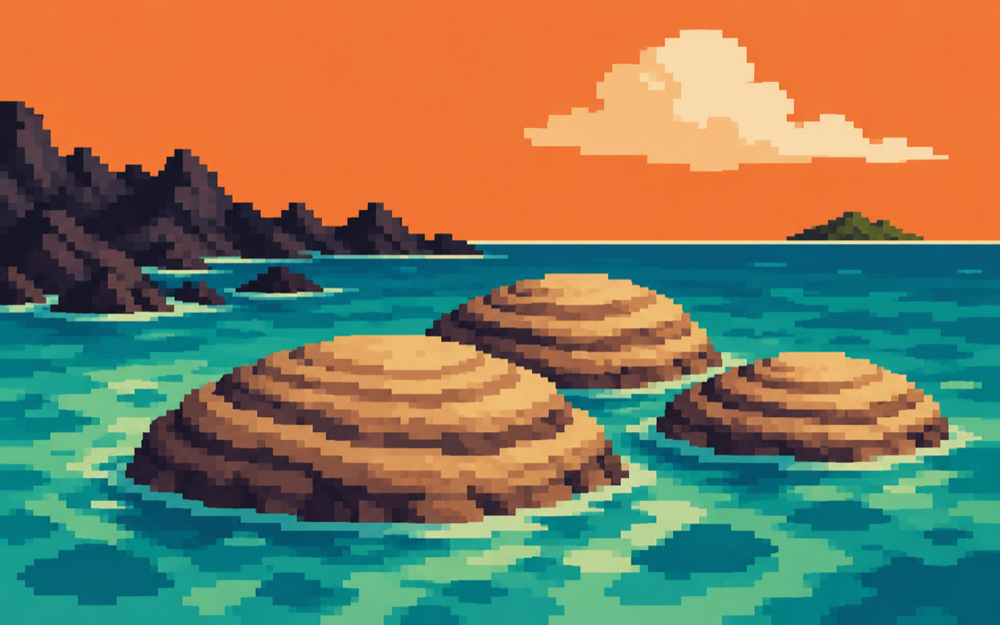

Lasting crust and oceans become more common.

ISLAND 02 · FIRST SIGNALS
THE ARCHEAN
4.0–2.5 BILLION YEARS AGO
Oceans and early continents became more stable. In shallow water, microbial communities began leaving layered stone messages that still survive today.
← BACK TO MAP◆ ABOUT THE ARCHEAN
The Archean saw the emergence of the earliest widely accepted evidence of life. Cyanobacteria built stromatolites: layered structures that grow as microbial mats trap sediment. The atmosphere held little free oxygen, and much of the planet looked unfamiliar, even where water flowed.
▶ WATCH THE CLUE
▶
OPEN VIDEO
Trace the early oceans and the microbial worlds that left some of
the oldest life signals in the rock record.
WATCH ON YOUTUBE ↗
WATCH ON YOUTUBE ↗
◷ KEY EVENTS TIMELINE
Some of the oldest possible signs of life appear in rock.
Stromatolites record microbial communities.
The Proterozoic begins.
The exact dates of early life evidence are actively studied and refined.
? FIELD NOTES
NO BLUE SKY YET
Free atmospheric oxygen was still extremely scarce.
STONE BY MICROBES
Living mats can build layered stromatolites, leaving a geological trace.
GREENSTONE BELTS
They preserve some of the oldest surviving pieces of Earth’s crust.
i SOURCE TRAIL
Core facts adapted from the Smithsonian’s Early Life on Earth guide and the USGS geologic time chart.